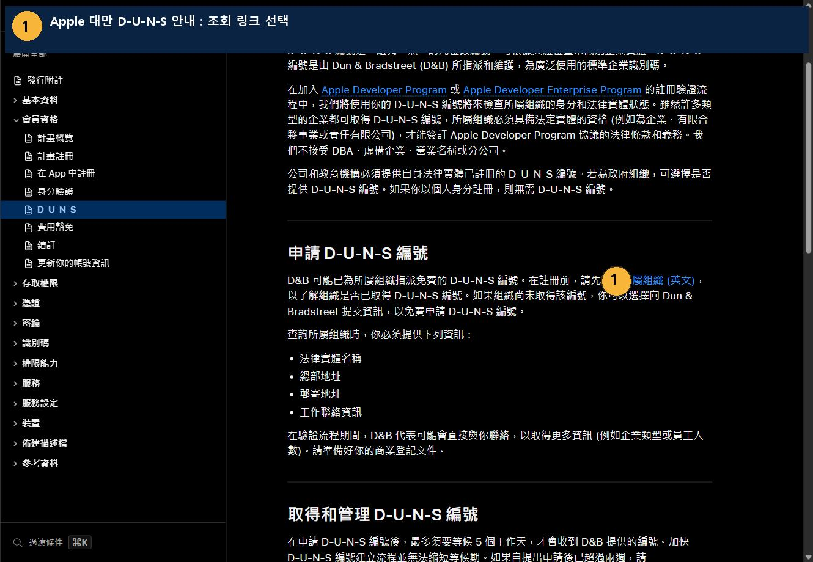
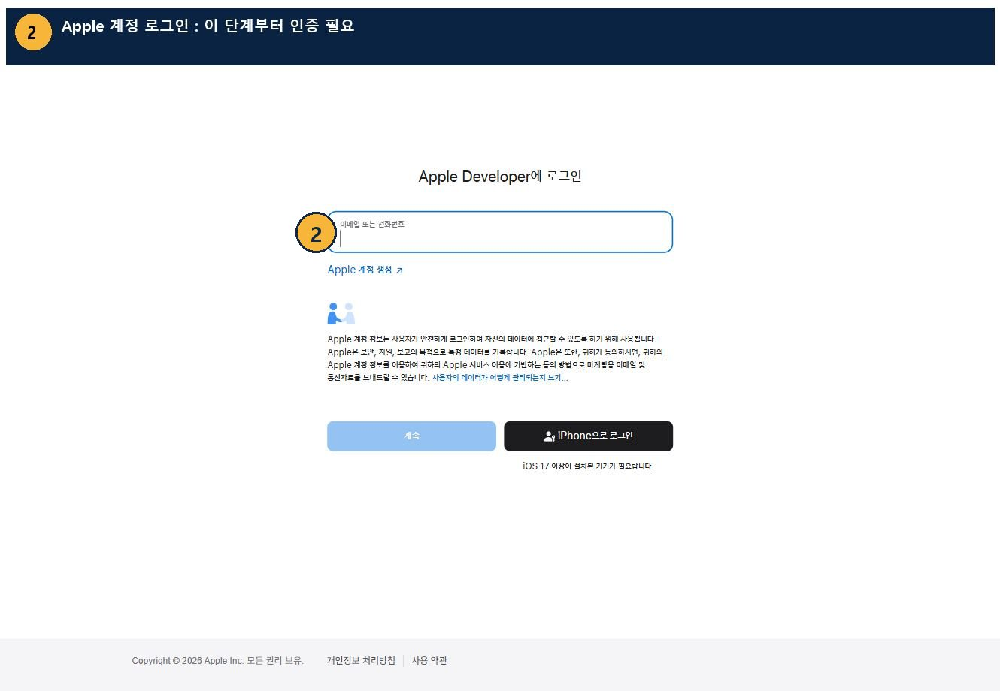
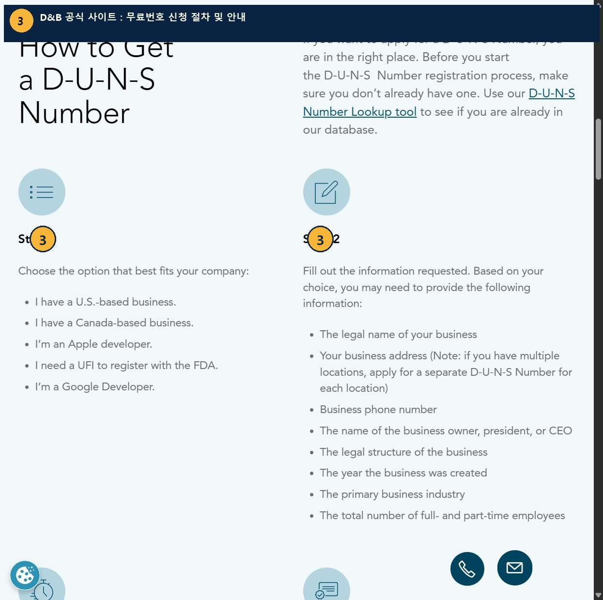
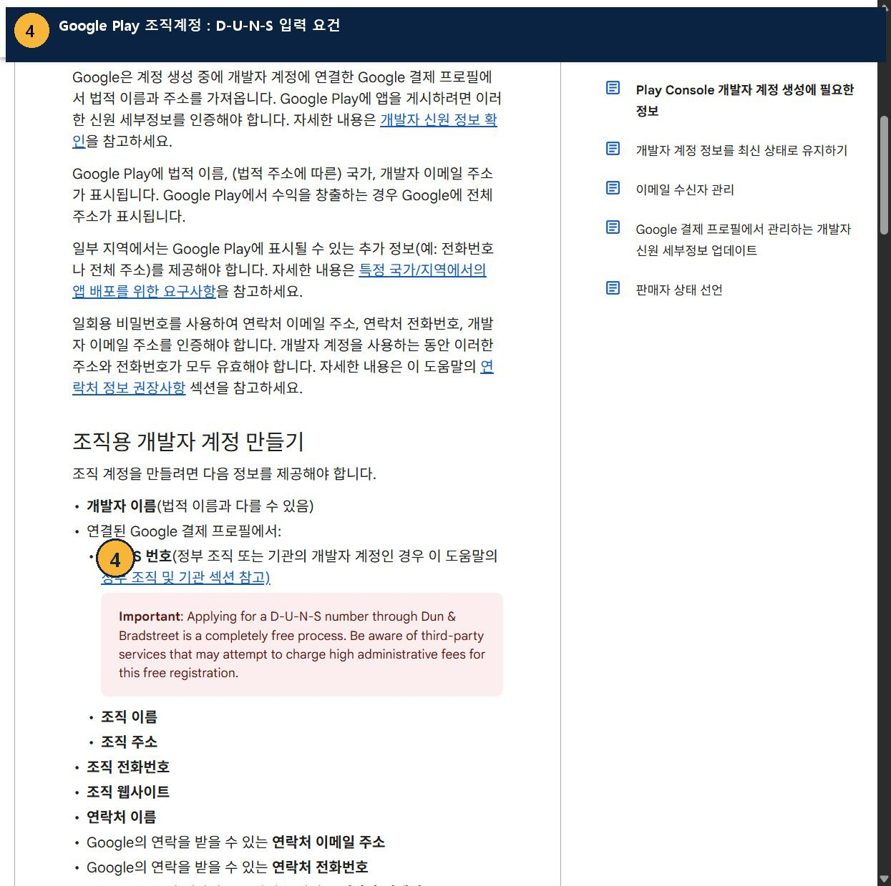

먼저 확인할 공식 URL
① 대만 Apple 공식 설명 및 조회 진입
대만 단체의 Apple Developer 가입을 위한 우선 경로
developer.apple.com/tw/help/account/membership/D-U-N-S/② 실제 D‑U‑N‑S 조회 진입 URL
접속 시 Apple 계정 로그인 화면으로 이동함을 회사 PC에서 확인
developer.apple.com/enroll/duns-lookup/③ D&B 공식 무료 번호 안내 (참고)
미국 사이트의 일반 절차 설명. 대만 신규 신청은 Apple 경로를 우선 사용
dnb.com/en-us/smb/duns/get-a-duns.html④ Google Play 공식 조직계정 안내
D‑U‑N‑S 의무 및 요구되는 조직 정보 확인
Google Play Console 공식 도움말 (한국어)현재 진행 상태: 공식 사이트 4곳 접속 및 실제 스크린샷 수집 완료. Apple ID·2단계 인증이 필요한 구간에서 멈췄으며, 한인회 단체명 조회·발급 신청·결제·서류 제출은 하지 않았습니다.
1
Apple 대만 안내 페이지에서 「查詢所屬組織」 선택
D‑U‑N‑S 번호 기존 보유 여부를 먼저 조회

- 위 Apple 대만 공식 안내 URL에 접속합니다.
- 「查詢所屬組織」(소속 조직 조회) 링크를 선택합니다.
- 다음 단계에서 Apple 계정 로그인을 요구합니다. 이미 번호가 있는지 확인한 후 없으면 무료 신청을 진행합니다.
2
Apple 계정 로그인 · 인증 필요
현재 실제 진행 차단 지점: 로그인하지 않은 상태

- 한인회 조직 계정 신청을 담당할 Apple 계정을 준비합니다.
- 계정 로그인 및 필요 시 2단계 인증(2FA)을 완료합니다.
- 로그인 후 보이는 조직 검색 양식의 실제 항목을 확인하고 등록증에 기재된 명칭·주소를 입력합니다.
사용자 조치 필요: 회사 PC의 별도 Chrome 창에서 Apple 계정 로그인을 진행해야 다음 화면을 캡처할 수 있습니다. 비밀번호·인증번호를 이 문서나 GitHub에 넣지 마세요. 로그인 이후 화면과 입력 필드는 아직 확인하지 않았습니다.
3
D&B 발급 절차 및 입력자료 검토
참고용 일반 절차 — 대만 전용 신청 화면이 아님

- Apple 조회 결과에서 미등록으로 확인되면 D&B에 무료 번호 발급을 요청할 수 있습니다.
- D&B 안내 기준 법적 명칭, 주소, 연락처, 단체 대표·법적 구조, 설립연도, 업종, 인원 등을 준비하면 좋습니다. 실제 요구되는 입력란은 경로·지역에 따라 다릅니다.
- D‑U‑N‑S 번호와 D‑U‑N‑S Registered 유료 인증 배지는 별도입니다. 번호만 필요한 개발자 계정 등록을 위해 유료 인증을 주문할 필요는 없습니다.
D&B 미국 페이지에는 미국·캐나다·Apple 개발자·Google 개발자 등 분기 옵션이 포함되어 있습니다. 대만 한인회는 미국 업체로 허위 선택하지 말고 Apple 대만 공식 조회 경로를 우선 이용하세요.
4
발급받은 번호를 Google Play 조직계정에도 사용
Google Play 공식 도움말에서 DUNS 요구사항 확인

- D&B에서 한인회 명의 9자리 D‑U‑N‑S를 발급받습니다.
- Apple 조직 가입 시 법적 명칭 및 D‑U‑N‑S를 일치시키고, Google Play 조직 계정의 결제 프로필 정보에도 일치시킵니다.
- 번호 발급 후 Apple 정보 반영까지 최대 영업일 2일이 추가될 수 있습니다.
대만 한인회 준비서류 및 정보
| 구분 | 준비할 내용 | 용도·필수성 |
|---|---|---|
| ① 단체 등록증 | 대만의 단체 등록 및 법적 지위를 확인할 수 있는 공식 서류 원본/스캔 | D&B 실체 검증 시 제시 가능하도록 준비. 추가 요청 시 제출 |
| ② 법적 단체명 | 등록증상 정식 명칭(중문/영문 등록명), 설립국가 Taiwan | 검색·신청 핵심 필수 정보. 임의 영문명으로 바꾸지 않음 |
| ③ 주소 | 등록증상 본부 주소, 우편주소, 우편번호 | 검색·신청 핵심 필수 정보. 주소 형식 일관성 유지 |
| ④ 공식 연락처 | 조직 전화번호, 업무 이메일, 신청 담당자 성명·연락처 | 검색·D&B 확인 전화/이메일 수신 |
| ⑤ 단체 기본정보 | 법적 조직 유형, 설립연도, 주요 활동분야, 상근/비상근 인원, 대표 이름 | D&B 확인 중 추가로 요청 가능 |
| ⑥ 대표 신분증 / 위임장 | 대표자 신분확인 또는 대표자 승인·담당자 위임 관계를 증명하는 서류 | D‑U‑N‑S 최초 조회 일률적 필수 아님. Apple/Google 조직 심사 또는 D&B 추가 확인 시 요청 가능 |
| ⑦ 공식 웹사이트 | 대만 한인회의 정상 동작하는 공식 웹 도메인과 업무용 도메인 이메일 | Apple·Google 조직 개발자 계정 심사 시 확인 |
비영리단체의 중요한 확인점: D‑U‑N‑S 발급과 Apple Developer의 조직 계정 승인은 별개입니다. Apple은 법적 계약을 체결할 수 있는 법적 실체를 요구합니다. 대만 한인회 등록증상 법적 성격이 이를 충족하는지 확인해야 합니다. 비영리 수수료 면제는 후속 신청으로 분리합니다.
실무 완료 체크리스트
- 단체등록증 법적 명칭·주소·법적 조직 유형 확인
- 한인회 공식 이메일·전화·우편번호 확보
- Apple 조직용 Apple ID 담당자 지정 및 로그인
- ① Apple 대만 경로에서 기존 D‑U‑N‑S 조회
- 기존 번호가 없을 때 D&B 무료 발급 진행
- D&B 추가 문의 시 공식 등록증 등 증빙 제공
- 9자리 번호 수령 후 Apple 데이터 연동 확인
- Google Play·Apple 조직 계정 등록에 번호 재사용
소요 안내: Apple 공식 도움말은 무료 발급 신청 후 최대 영업일 5일, Apple 연동 최대 영업일 2일을 안내합니다. D&B의 일반 경로와 Google 도움말은 최대 영업일 30일까지 소요될 수 있다고 안내하므로 일정은 여유 있게 잡으세요.
Apple 공식 D‑U‑N‑S 조회 시작 대만 Apple 안내 다시 보기회사 PC 실행·검증 기록
대상: KR0002-CHOIDEAYEOL / 별도 Chrome 실행 프로필. 기존 업무 Chrome 프로필 및 실제 마우스를 점유하지 않는 방식으로 페이지 이동·캡처했습니다.
검증: Apple 대만 공개 문서 ① 접속 성공 / Apple ID 로그인 ② 도달 / D&B 공식 안내 ③ 접속 성공 / Google Play 조직 필수조건 ④ 접속 성공.
미검증: 로그인 후 실제 한인회 명칭 검색 결과, 신규 번호 신청 입력 양식, D&B 심사 결과, Apple/Google 조직 승인 여부.
보안: 페이지 캡처에는 계정 이메일·인증번호·등록증·개인정보가 포함되지 않았습니다. 신청 화면 인증 후 추가 캡처 시 반드시 마스킹해야 합니다.